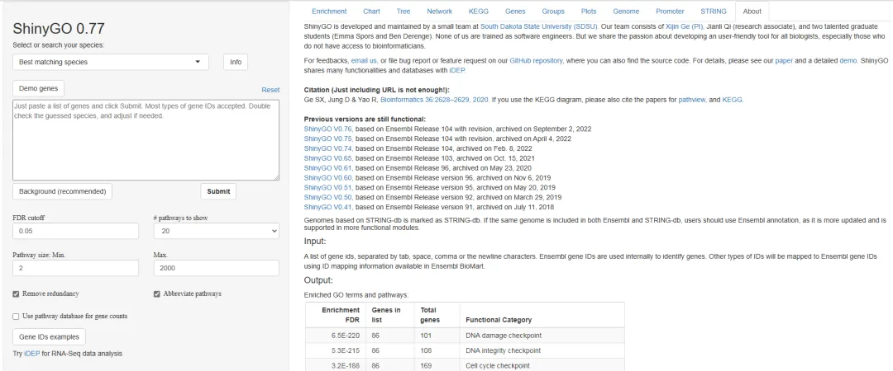
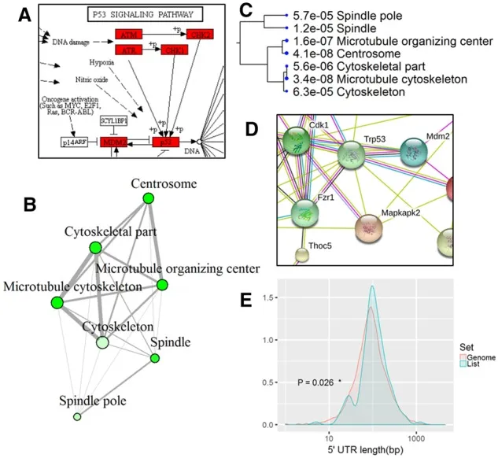

搭一个shinyAPP就是一篇《Bioinformatics》？
原文：https://mp.weixin.qq.com/s?__biz=MzAwMzIzOTk5OQ==&mid=2247498668&idx=1&sn=0882e6eb06e6522208c8fedc705af342&chksm=9b3c82fcac4b0beaa34f62a4079c7a51cd98005badcaf699aacb6adb93ae45faa8f25d0bd033#rd 合集：文献速递
写在前面
原本想引用一番shiny，结果并没有检索出shiny研发团队所发表的论文，倒是有诸多shiny爱好者 搭建shinyApp所发表的文章。例如这篇题为“ShinyGO: a graphical gene-set enrichment tool for animals and plants”、于2020年发表于《Bioinformatics》上的文章[1]。其实本来想吐槽一番，这UI界面比我做的App还丑：

况且shiny团队都没有发过文章，仅以shinyApp为主题的文章未免。。。毕竟我也写过一些生信垃圾： 给你安排一个懂生信的工具人（七）：在线版相关性分析给你安排一个懂生信的工具人（八）：不会有人真的只会做T检验吧 给你安排一个懂生信的工具人（九）：在线PCA分析给你安排一个懂生信的工具人（十）：不学编程 零代码完成单细胞测序数据分析 我把之前的在线工具都挪了个窝给你安排一个懂生信的工具人（十一）：在线查询KEGG中通路与基因对应关系 给你安排一个懂生信的工具人（十二）：KEGG通路、基因查询2.0给你安排一个懂生信的工具人|13. 火山图绘制2.0给你安排一个懂生信的工具人|14. 富集分析App 给你安排一个懂生信的工具人|15. 高阶韦恩图 UpSetR App 但仔细一瞧，这篇文章发表在《Bioinformatics》上的原因是其集天下之富集分析之大成 ，基本可以满足各位对富集分析的所有幻想。肝代码不易，给作者点赞 ，值得诸位一试。ShinyGO
作者整理了Ensembl、STRING-db、KEGG、NCBI、UniProt、Biocarta、REACTOME、MSigDB、GeneSetDB等大型数据库中的共59种植物、265种动物、115种弧菌与1678种细菌。其可以执行富集分析结果并完成可视化。相比于PlantGSEA这样专注于15种植物物种的富集分析来说，ShinyGO显然功能丰度的多。除了富集分析之外，ShinyGO还可以展示基因通路图、蛋白质互作网络图、基因共表达等可视化结果与基因类型、长度、GC含量、染色体分布等信息。页面功能多多，大家可以尽情探索：http://bioinformatics.sdstate.edu/go/。

感兴趣的同学也可以学一学shiny：https://mastering-shiny.org/。欢迎大家带着自己的App来投稿，我可以给予大家一点我的愚见，并且将你的作品部署在我们的服务器中。 [1]Ge SX, Jung D, Yao R. ShinyGO: a graphical gene-set enrichment tool for animals and plants. Bioinformatics. 2020 Apr 15;36(8):2628-2629.
如何联系我们
 公众号后台消息更新不及时，超过48h便不允许回复读者消息，这里给大家留一下领取资料、免费服务器的微信号 ，方便各位随时交流、提建议(科研任务繁重，回复不及时请见谅)。此外呼声一直很高的交流群 也建好了，欢迎大家入群讨论：永久免费的千人生信、科研交流群
公众号后台消息更新不及时，超过48h便不允许回复读者消息，这里给大家留一下领取资料、免费服务器的微信号 ，方便各位随时交流、提建议(科研任务繁重，回复不及时请见谅)。此外呼声一直很高的交流群 也建好了，欢迎大家入群讨论：永久免费的千人生信、科研交流群
大家可以阅读完这几篇之后添加给生信入门初学者的小贴士 如何搜索公众号过往发布内容

 您点的每个赞和在看，我都认真当成了喜欢
您点的每个赞和在看，我都认真当成了喜欢